ellen
 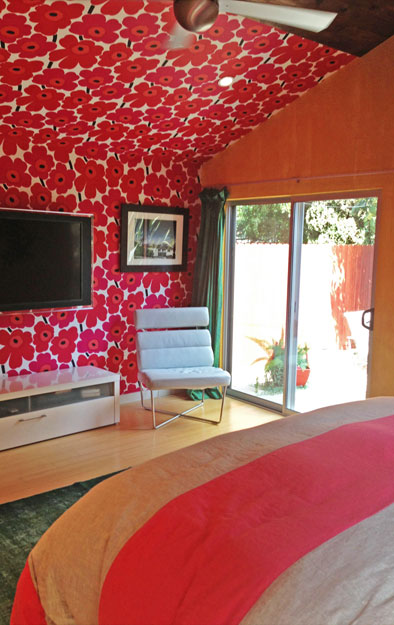
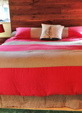
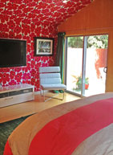
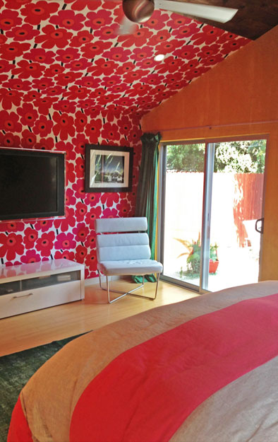
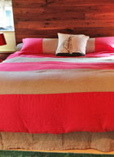
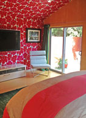
Please forgive me for not writing earlier to you know that the linens arrived and they are magnificent. Perfect for the room. I took these photos a while ago. Still working on end tables that I haven’t found yet and maybe a bench at end of the bed. It’s been such a pleasure. If you send me a link to where, I’ll share my experience. Thanks!
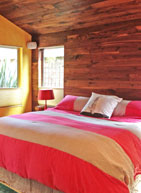
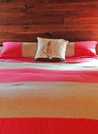
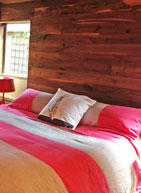
 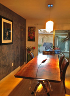
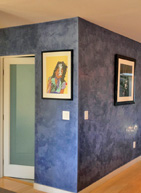
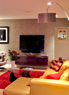
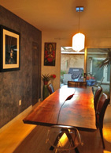
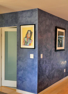
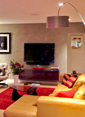